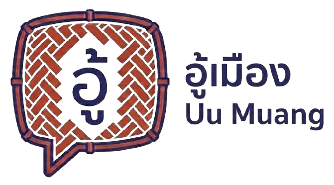

Mor Hom Indigo
#293360
Clay Red
#A3432C
Ping River Cyan
#2D80A3
Sa Paper
#F7F5EE
Our mark
The ก๋วย, the woven bamboo basket at every Lanna market stall, shaped into a speech bubble. Language tied to everyday commerce and community.
Shared conversation builds connection.
Local knowledge opens to visitors beyond the market walls.
Natural Lanna tones, not gold: Mor Hom indigo from artisans' blue-dyed cotton, clay red from Lanna earth, on Sa paper.
อู้เมือง Uu Muang 11